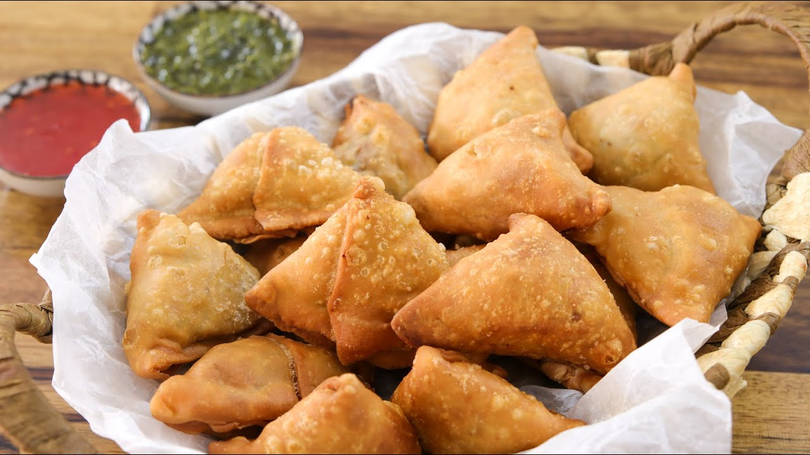

Samosas
Home

Description
Samosas are a traditional Indian dish that are served as appetizers. They are deep-fried pastries
filled with potato, peas, onions, and spices, and they are usually in a triangular shape. They can
be eaten as they are but people like dipping them in ketchup, chutnee, or their favorite dips.
Ingredients
For samsoas dough:
- All-purpose flour (2 cups)
- Grapeseed oil (0.25 cup)
- Water (6 tablespoons)
- Salt (0.75 teaspoon)
For potato filling:
- 4 potatoes
- Green peas (0.5 cup)
- Grapeseed oil (1 tablespoon)
- Minced ginger (1 tablespoon)
- 2 green chili peppers
- Lemon juice (1 teaspoon)
- Salt (0.5 teaspoon)
Spices:
- Cumin seeds (1 teaspoon)
- Masala (1 teaspoon)
- Red chili powder (1 teaspoon)
Steps
- Peel and boil potatoes until tender. Then, crumble them (but don't mash them).
- In a bowl, mix together flour, oil, and salt. Then add the water, mix it and let it rest for 20 mins.
- While waiting, heat a pan with oil and cumin seeds. When they begin to sizzle, add ginger and green chili peppers.
Cook for 1 minute.
- Then mix the green peas with them and add red chili powder and masala.
- Stir the potatoes into this mixture of spices and sprinkle salt. Set aside to cool.
- Now, take the dough and knead it until smooth. Divide it into 5 pieces and roll them into balls.
- Flatten one ball and roll into oval shape. Cut this oval in half to form two semicircles. Each one makes one samosa.
- Join the edges to make a cone shape and press down to seal. Can use flour-water paste to act as a glue if needed.
- Fill the cone with the potato and spice mixture. Once filled, seal the opening. Repeat this process until the dough or filling runs out.
- Heat up oil on medim heat. Drop as many samosas that fit under the the oil into it. Cook them for 10 to 12 minutes.
- Once the crust is firm, increase the heat a bit and flip the samosas. Cook until golden color and take them out. Repeat for all the uncooked samosas left.
- Let the samosas cool off for a few minutes and serve with ketchup or chutnee. Enjoy!